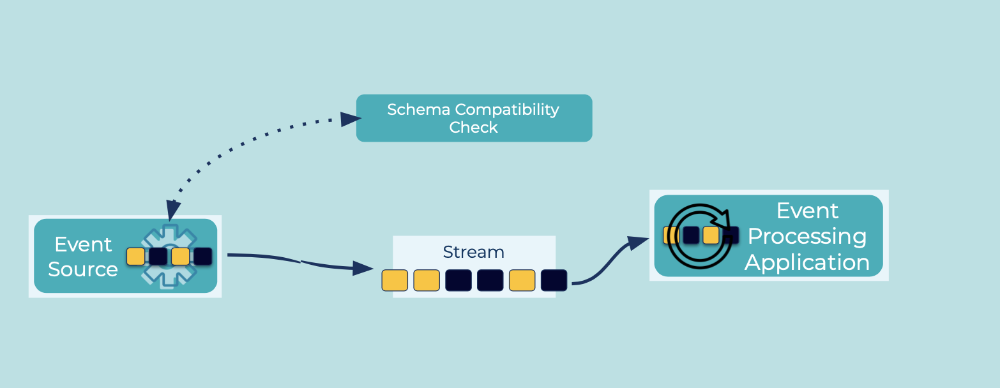

Schema Compatibility
Schemas are like Data Contracts in that they set the terms that guarantee applications can process the data they receive. A natural behavior of applications and data schemas is that they evolve over time, so it's important to have a policy about how they are allowed to evolve and what compatibility rules are between old and new versions.
Problem
How do we ensure that schemas can evolve without breaking existing Event Sinks (readers) and Event Sources (writers), including Event Processing Applications?
Solution

There are two types of compatibility to consider: backwards compatibility and forwards compatibility.
Backwards compatibility ensures that newer readers can update their schema and still consume events written by older writers. The types of backwards compatible changes include:
- deletion of fields: old writers can continue to include this field, new readers ignore it
- addition of optional fields with a default value: old writers do not write this field, new readers use the default value
Forwards compatibility ensures that newer writers can produce events with an updated schema that can still be read by older readers. The types of forwards compatible changes include:
- addition of fields: new writers include this field, old readers ignore it
- deletion of optional fields with a default value: new writers do not write this field, old readers use the default value
Implementation
Using Avro as the serialization format, if the original schema is:
{"namespace": "io.confluent.examples.client",
"type": "record",
"name": "Event",
"fields": [
{"name": "field1", "type": "boolean", "default": true},
{"name": "field2", "type": "string"}
]
}
Examples of compatible changes would be:
- Removal of a field that had a field: notice
field1is removed
{"namespace": "io.confluent.examples.client",
"type": "record",
"name": "Event",
"fields": [
{"name": "field2", "type": "string"}
]
}
- Addition of a field with a default: notice
field3is added with a default value of 0.
{"namespace": "io.confluent.examples.client",
"type": "record",
"name": "Event",
"fields": [
{"name": "field1", "type": "boolean", "default": true},
{"pame": "field2", "type": "string"},
{"pame": "field3", "type": "int", "default": 0}
]
}
Considerations
We can use a fully-managed Schema Registry service with built-in compatibility checking, so that we can centralize our schemas and check compatibility of new schema versions against previous versions.
curl -X POST --data @filename.avsc https://<schema-registry>/<subject>/versions
Once we updated our schemas and asserted the desired compatibility level, we must be thoughtful about the order of upgrading the applications that use them. In some cases we should upgrade writer applications first (Event Sources, i.e., consumers), in other cases we should upgrade reader applications first (Event Sinks and Event Processors, i.e., producers). See Schema Compatibility Types for more details.
References
- Event Serializer: encode events so that they can be written to disk, transferred across the network, and generally preserved for future readers
- Schema-on-Read: enable the reader of events to determine which schema to apply to the Event that is processed
- Schema evolution and compatibility: backward, forward, full
- Working with schemas: creating, editing, comparing versions
- Maven plugin to test for schema compatibility during the development cycle